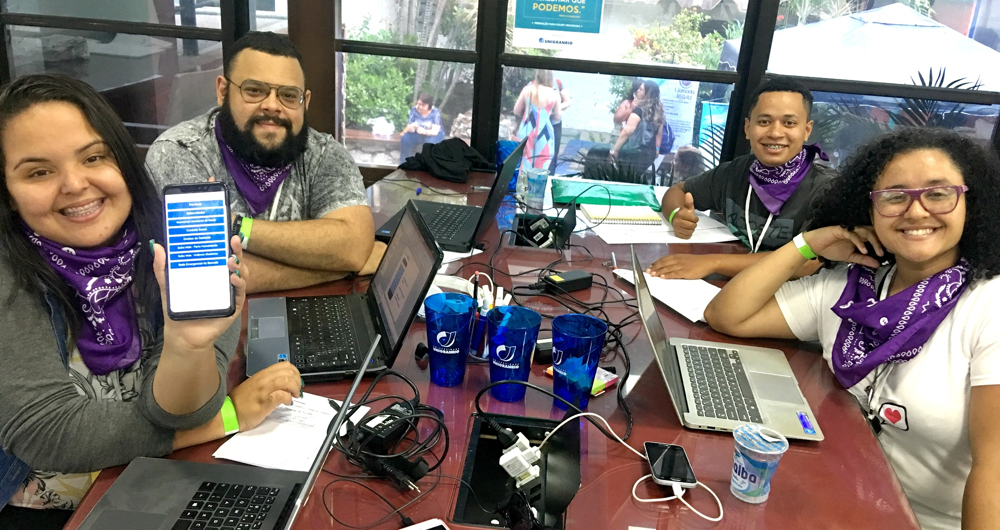

Sobre
A Universidade do Grande Rio - UNIGRANRIO, lança o 2° Hackathon Unigranrio - Unigranrio.
Trata-se de uma maratona de programação multidisciplinar e colaborativa, onde grupos competem
entre si desenvolvendo projetos que possam fornecer melhorias significativas ou solucionem
problemas pertinentes ao tema proposto, por meio da aplicação eficiente e inteligente das
tendências tecnológicas disponíveis, em um tempo de trabalho limitado de 24 horas.

Disposições Gerais
Participação
Qualquer pessoa acima de 18 anos pode participar, desde que alocada em uma das categorias
dispostas neste regulamento. No entanto, os participantes devem estar atentos às seguintes
concessões:
-
Permitido: será permitido a utilização de frameworks de desenvolvimento, simuladores ou
ambientes virtuais de prototipagem, que facilitam o processo de trabalho.
-
Não permitido: os participantes não podem concorrer com soluções que já estejam em fase
avançada de desenvolvimento e, da mesma forma, não podem estar prototipadas em qualquer
nível.
Etapas e Calendário
Este evento contará com 4 (quatro) etapas distintas, cada uma contendo suas respectivas atividades e calendário, conforme o quadro abaixo
| Categoria |
Descrição |
| Alunos de Graduação Unigranrio |
Alunos regularmente matriculado em cursos de Graduação da Unigranrio. |
| Alunos de Graduação Visitantes |
Alunos de outras instituições de ensino de nível superior regularmente matriculados. |
| Profissionais |
Pessoas interessadas em participar que já estão inseridas no mercado de trabalhoou cursando pós-graduação relacionada à área de tecnologia. |
| Em formação |
Alunos de ensino médio ou técnico, que visam fazer parte do setor de soluçõestecnológicas. |
Participação
Qualquer pessoa acima de 18 anos pode participar, desde que alocada em uma das categorias dispostas neste regulamento, no entanto os participantes devem estar atentos as seguintes concessoes
| Etapas |
atividades |
Inicio |
Fim |
| Etapas de inscrição |
Etapa 1 |
Divulgação do tema. |
08/04/2019 |
| Etapa 2 |
Cadastro de equipe e sua ideia de projeto. |
08/04/2019 |
21/04/2019 |
| Etapas de seleção |
Etapa 3 |
Seleção das ideias |
22/04/2019 |
23/04/2019 |
| Divulgação das equipes e ideias selecionadas. |
24/04/2019 |
| Etapa Presencial |
Etapa 4 |
Credenciamento |
26/04/2019 às 17:30h |
| Desenvolvimento e prototipagem da solução. |
26/04/2019 às 19:30h |
27/04/2019 às 20h |
As etapas de 1 e 2 ocorrerão de forma online; a etapa 3 trata-se de uma etapa eliminatória; e a
etapa 4, que é a etapa presencial com início no dia 26/04/2019, trata-se de uma etapa
classificatória.
Etapas de inscrição - Online
Formulário de inscrição
As equipes deverão cadastrar suas ideias através do site www.hackathonunigranrio com br/inscreva-se aqui. Após a leitura do
regulamento, deverão preencher o formulário disponível, atentando aos campos obrigatórios.
| 1 - Categoria |
A categoria a qual a equipe se encaixa |
| 2 - Nome da equipe |
O nome da equipe |
| 3 - Ideia de projeto |
Descreva brevemente, mas com clareza, a ideia de projeto da equipe. |
| 4 - Qual problema você está solucionando |
Descreva qual problema a equipe propõe solucionar, dentro do tema proposto |
| 5 - Membros da equipe |
Quem são as pessoas que compõem a equipe. São obrigatórios, pelo menos, 3 (três) membros em cada equipe e, no máximo, 5 (cinco) membros |
Etapa de Seleção - Eliminatória
Serão selecionadas até 15 (quinze) propostas para a etapa presencial conforme os critérios de seleção estabelecidos neste regulamento
Os projetos selecionados serão divulgados através do link (###). Os alunos devem estar atentos aos canais de comunicação da Unigranrio para eventuais informações importantes.
Critérios de seleção
Serão avaliadas apenas os projetos que preencherem todos os campos obrigatórios do formluário de inscrição. Assim, para esta estapa serão levado em conta os critérios:
| Aderência |
Nesse critério será avaliado se o projeto apresentado é aderente à temática do evento. |
| Relevância |
O grau de magnitude do problema apresentado, bem como de impacto da solução proposta. |
Etapa Presencial - classificatória
Agenda de Trabalho
Teremos a seguinte programação de trabalho, com início às 17h30min do dia 23/11/2018 e término às 20h do dia 24/11/2018:
| Dia |
Horário |
Atividade |
| 26/04/2019 |
17h30min |
Credenciamento |
| 19h às 19h30min |
Abertura |
| 19h30min às 20h |
Talk (tema a definir) |
| 20h |
Início do desenvolvimento das soluções |
| 26/04/2019 |
12h |
Almoço (Oferecido pelo parceiro de alimentação |
| 18h |
Término do desenvolvimento das soluções |
| 18h15min |
Apresentação dos projetos |
| 19h30min às 20h |
Premiação e Encerramento |
Haverá alimentação disponível durante o evento com café, água e suco para os participantes.
Uso de Equipamentos
Atenção: Durante a etapa presencial, os participantes do evento devem trazer seus próprios equipamentos e dispositivos para desenvolver e prototipar. Será utilizado a política Bring your own device (BYOD) - (do inglês: traga seu próprio dispositivo - laptops, tablets, smartphones, placas, breadboards, cabos e etc). Incluindo extensões e adaptadores (se necessário).
Ambiente de Tabalho
A Unigranrio irá fornecer o espaço confortável para os participantes, incluindo mesas, cadeiras, energia elétrica, Internet de qualidade e papel A3. Será fornecido também lanche e estacionamento (xx vagas).
Apresentação dos Projetos
A apresentação dos projetos para a banca avaliadora será baseada no modelo pitch (uma apresentação cativante, rápida e sucinta). É ideal que o grupo mostre a importância e viabilidade da solução proposta. O tempo destinado para a apresentação do pitch será de 5 (cinco) minutos por grupo. A banca avaliadora terá 2 (dois) minutos para realizar perguntas e o grupo terá 2 (dois) minutos para responder.
Critérios de Avaliação
A banca avaliadora será composta por convidados de renome da região, ligados à inovação, bem como forte atuação no mercado tecnológico. Estes avaliadores serão divulgados no site do evento.
| Qualidade da Solução |
Nesse critério será avaliado se o projeto apresentado é aderente à temática do evento. |
| Proposta de Valor |
O grau de magnitude do problema apresentado, bem como de impacto da solução proposta. |
| Mercado |
O grau de magnitude do problema apresentado, bem como de impacto da solução proposta. |
Atenção: caso se identifique que algum projeto foi desenvolvido, bem como prototipado, fora da etapa presencial, a equipe será desclassificada e não poderá concorrer à premiação.
Considerações Finais
Toda e qualquer situação não prevista, bem como eventuais casos omissos, serão decididos exclusivamente pela Unigranrio.
Estas regras poderão ser alteradas e/ou suspensa e/ou cancelada sem aviso prévio e/ou justificativa formalizada por motivo de força maior e/ou por qualquer outro motivo que esteja fora do controle da Unigranrio e que comprometa a sua realização, de forma a impedir e/ou modificar substancialmente a sua condução como originalmente planejada.
A alteração das regras e/ou suspensão ou o cancelamento serão divulgados pela Unigranrio através do Facebook e site do evento, de forma que o participante deve acessar periodicamente estas plataformas, a fim de tomar conhecimento de eventuais alterações.